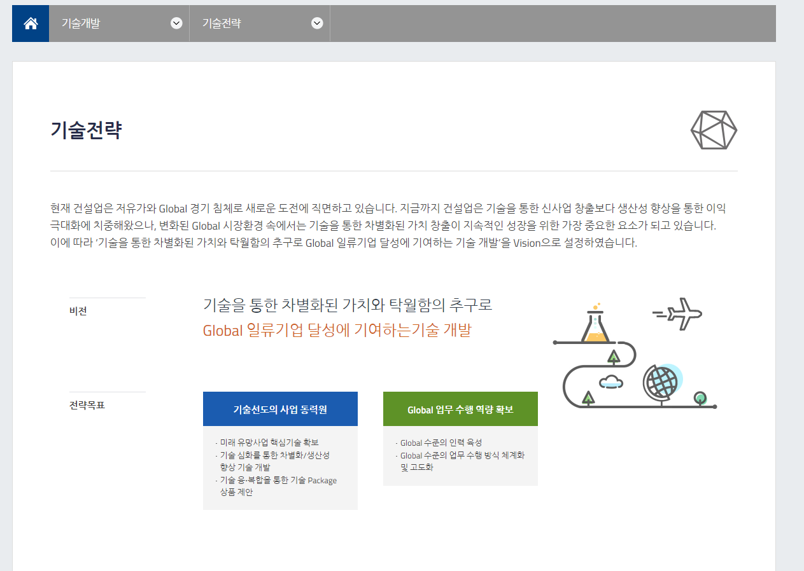

h1

建筑行业正面临着由低油价和全球经济衰退驱动的新挑战。该行业本身已致力于通过提高生产率来增加利润，而非构建由新技术驱动的新业务。然而，为了维持我们的业务，在息万变的全球市场中通过开发技术来创造不同价值变得尤为重要。有鉴于此，技术部门已将愿景设定为:“通过寻求差异化价值和卓越，为一家全球顶尖公司开发技术”。

建筑行业正面临着由低油价和全球经济衰退驱动的新挑战。该行业本身已致力于通过提高生产率来增加利润，而非构建由新技术驱动的新业务。然而，为了维持我们的业务，在息万变的全球市场中通过开发技术来创造不同价值变得尤为重要。有鉴于此，技术部门已将愿景设定为:“通过寻求差异化价值和卓越，为一家全球顶尖公司开发技术”。